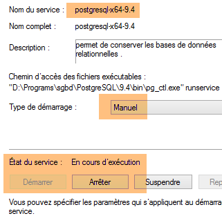
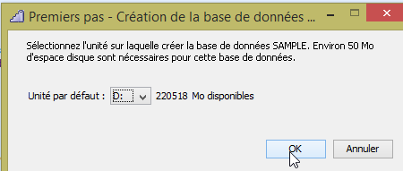
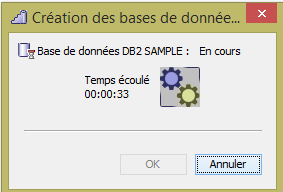
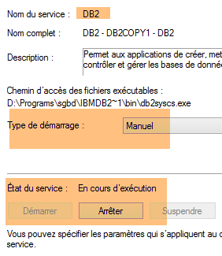
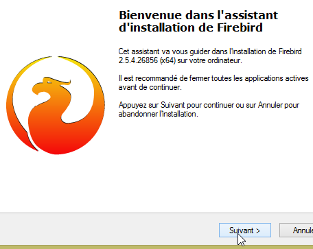
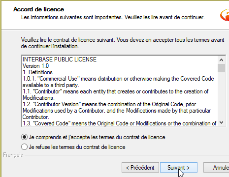
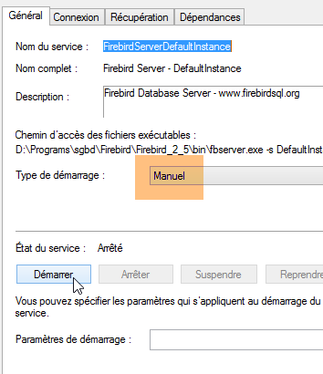
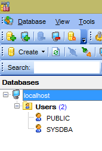

23. الملاحق
نشرح هنا كيفية تثبيت الأدوات المستخدمة في هذا المستند على أجهزة Windows 7 أو 8. تُظهر لقطات الشاشة عمومًا الإصدارات 64 بت من نظام إدارة قواعد البيانات والأدوات المثبتة. يجب على القارئ تكييفها مع بيئته الخاصة.
23.1. تثبيت JDK
يمكن العثور على أحدث إصدار من JDK على الرابط [http://www.oracle.com/technetwork/java/javase/downloads/index.html] (أكتوبر 2014). سنشير إلى دليل تثبيت JDK باسم <jdk-install> فيما يلي.
23.2. تثبيت Maven
Maven هي أداة لإدارة التبعيات في مشروع Java وغير ذلك. وهي متوفرة (أكتوبر 2014) على الرابط [http://maven.apache.org/download.cgi].
قم بتنزيل الأرشيف وفك ضغطه. سنشير إلى دليل تثبيت Maven باسم <maven-install>.
- في [1]، يقوم ملف [conf/settings.xml] بتكوين Maven؛
ويحتوي على الأسطر التالية:
<!-- localRepository
| The path to the local repository maven will use to store artifacts.
|
| Default: ${user.home}/.m2/repository
<localRepository>/path/to/local/repo</localRepository>
-->
قد تتسبب القيمة الافتراضية في السطر 4 في حدوث مشكلات لبعض البرامج التي تستخدم Maven إذا كان مسار {user.home} الخاص بك يحتوي على مسافة (على سبيل المثال، [C:\Users\Serge Tahé])، كما هو الحال معي. سنحدد (السطر 7) مجلدًا مختلفًا لمستودع Maven المحلي:
<!-- localRepository
| The path to the local repository maven will use to store artifacts.
|
| Default: ${user.home}/.m2/repository
<localRepository>/path/to/local/repo</localRepository>
-->
<localRepository>D:\Programs\devjava\maven\.m2\repository</localRepository>
في السطر 7، تجنب استخدام مسار يحتوي على مسافات.
سنقوم بتثبيت SpringSource Tool Suite [http://www.springsource.com/developer/sts] (أكتوبر 2014)، وهي بيئة Eclipse مهيأة مسبقًا بالعديد من المكونات الإضافية المتعلقة بإطار عمل Spring، بالإضافة إلى تكوين Maven مثبت مسبقًا.
- انتقل إلى موقع SpringSource Tool Suite (STS) [1] لتنزيل الإصدار الحالي من STS [2A] [2B].
- الملف الذي تم تنزيله هو برنامج تثبيت يقوم بإنشاء بنية دليل الملفات [3A] [3B]. في [4]، نقوم بتشغيل الملف القابل للتنفيذ،
- في [5]، نرى نافذة مساحة عمل IDE بعد إغلاق نافذة الترحيب. في [6]، تظهر نافذة خوادم التطبيقات،
- في [7]، نافذة الخوادم. تم تسجيل خادم. وهو خادم VMware متوافق مع Tomcat.
يجب تحديد دليل تثبيت Maven لـ STS:
- في [1-2]، قم بتكوين STS؛
- في [3-4]، أضف تثبيتًا جديدًا لـ Maven؛
- في [5]، حدد دليل تثبيت Maven؛
- في [6]، أكمل المعالج؛
- في [7]، قم بتعيين تثبيت Maven الجديد كإعداد افتراضي؛
- في [8-9]، تحقق من مستودع Maven المحلي — المجلد الذي سيخزن فيه التبعيات التي يتم تنزيلها وحيث سيضع STS العناصر التي تم إنشاؤها؛
يجب عليك أيضًا تحديد JDK (مجموعة أدوات تطوير Java) لتشغيل مشروعي Eclipse مع وبدون Maven [1-5].
باستخدام [4]، يمكنك إضافة JDKs (مجموعات أدوات تطوير Java) أو JREs (بيئات تشغيل Java). يمكن للأخيرة تشغيل ملفات .class ولكنها لا تستطيع ترجمة ملفات .java لإنتاجها. يمكن لـ JDK القيام بالأمرين معًا. يجب عليك اختيار JDK لأن بعض عمليات Maven تتطلب وجوده.
لإنشاء مشروع Eclipse، اتبع الخطوات التالية:
- في [3]، قم بتسمية المشروع؛
- في [4]، حدد مجلدًا فارغًا موجودًا؛
- في [5]، يتم إنشاء المشروع؛
- في [5-8]، قم بإنشاء حزمة. الحزمة هي مجلد يحتوي على كود Java. يمكن أن تحمل فئتان نفس الاسم إذا كانتا تنتميان إلى حزمتين مختلفتين. لا يمكن أن توجد حزمتان تحملان نفس الاسم داخل مشروع واحد. لذلك، لا يمكنك استخدام اسم حزمة موجود بالفعل في إحدى تبعيات المشروع. ستستخدم الشركة اسم حزمة يحدد الشركة والمشروع وفروعه المختلفة؛
- في [9]، قم بتسمية الحزمة؛
- في [10]، الحزمة التي تم إنشاؤها؛
- في [11-13]، قم بإنشاء فئة داخل الحزمة التي تم إنشاؤها؛
- في [14]، قم بتسمية الفئة (يجب اتباع قاعدة CamelCase — يجب أن تبدأ كل كلمة في الاسم بحرف كبير متبوعًا بأحرف صغيرة)؛
- في [15]، تحقق من الحزمة؛
- في [16]، حدد المربع. هذا يطلب إنشاء الطريقة الثابتة [main]. هذه الطريقة تجعل الفئة قابلة للتنفيذ، أي الفئة الأولى التي يتم تنفيذها في المشروع؛
- في [17]، الفئة التي تم إنشاؤها بهذه الطريقة؛
اكتب الكود التالي في الطريقة [main]، والتي تعرض نصًا على وحدة التحكم:
package st.istia;
public class Test01 {
public static void main(String[] args) {
System.out.println("test01");
}
}
- في [18-20]، قم بتشغيل الفئة. عندئذٍ سيتم تنفيذ أسلوبها [main]؛
- في [21-22]، نتيجة التطبيق؛
إذا لم تكن طريقة العرض [Console] موجودة، فاتبع الخطوات التالية [1-4]:
عند استيراد مشروع Eclipse، قد يحتوي على أخطاء. قد يكون ذلك بسبب تكوين غير صحيح للمشروع. لتصحيح الخطأ (إن وجد)، اتبع الخطوات التالية:
- في [1]، قم بتعديل [مسار البناء] للمشروع؛
- في [2]، تم تكوين المشروع لاستخدام JVM 1.5؛
- في [3]، قم بإزالة هذه التبعية؛
- في [4]، أضف تبعية جديدة؛
- في [5]، أضف JVM؛
- في [6]، حدد JVM للجهاز؛
بمجرد الانتهاء من ذلك، تحقق من صحة كل شيء ثم انتقل إلى خاصية [مترجم Java] للمشروع [7]:
- في [8]، قم بتوجيه المُجمِّع لقبول جميع ميزات لغة Java حتى الإصدار 1.7 (أو 1.8) بما في ذلك؛
- في [9]، نقوم بالتحقق من الصحة؛
- في [10]، يجب ألا يحتوي المشروع المعاد تهيئته على أي أخطاء؛
بالإضافة إلى ذلك، قد يستخدم المشروع المستورد ترميز الأحرف UTF-8. اتبع هذه الخطوات لتعيين هذا الترميز في المشروع المستورد [1-4]:
بالإضافة إلى ذلك، قد يكون من المفيد تعطيل التدقيق الإملائي في المشروع لمنع ظهور تعليقات باللغة الفرنسية تحت خط كأنها غير صحيحة. اتبع الخطوات [1-4] أدناه:
يمكن العثور على نظام إدارة قواعد البيانات MySQL5 Community Edition (اعتبارًا من يونيو 2015) على الرابط [https://dev.mysql.com/downloads/mysql/]:
تتم عملية التثبيت على النحو التالي:
- في [8]، تم استخدام كلمة المرور [root]. في هذا المستند، بيانات اعتماد مسؤول نظام إدارة قواعد البيانات MySQL هي [root / root]؛
بمجرد تثبيت MySQL 5، افتح صفحة إدارة خدمات Windows:
- [1]: رمز Windows في الزاوية السفلية اليسرى؛
- في [8]، اضبط خدمة [MySQL56] على التشغيل اليدوي حتى لا تستهلك الموارد دون داعٍ. ستقوم بتشغيلها من صفحة الخدمات كلما احتجت إليها؛
23.5. تثبيت EMS MyManager
يقدم موقع الويب [http://www.sqlmanager.net/en/] برامج عملاء مجانية لإدارة ستة أنواع من أنظمة إدارة قواعد البيانات (DBMS):
الميزة هي أن جميعها تتميز بنفس الواجهة لإدارة أنظمة إدارة قواعد البيانات. وهذا مثالي لهذا المستند، حيث نريد إدارة جميع أنظمة إدارة قواعد البيانات الستة. ولا توجد حاجة لتعلم عميل جديد عند التبديل بين أنظمة إدارة قواعد البيانات. ويمكن العثور عليها جميعًا على الرابط [http://www.sqlmanager.net/download/]. قم بتنزيل الإصدارات "المبسطة" المجانية:
عناوين URL للتنزيل هي حالياً (مايو 2015) كما يلي:
عند تثبيت عميل MySQL5 MyManager، على سبيل المثال، تحصل على بنية الدليل التالية:
- يوجد الملف القابل للتنفيذ في [2]؛
- توضح الخطوات [3-8] كيفية توصيل [MyManager] بإحدى قواعد بيانات MySQL؛
- في [4]، كلمة المرور هي [root]؛
23.6. تثبيت Oracle Database Express Edition 11g Release 2
يتوفر نظام إدارة قواعد البيانات (DBMS) Oracle Database Express Edition 11g Release 2 على الرابط التالي (يونيو 2015): [http://www.oracle.com/technetwork/database/database-techno logies/express-edition/downloads/index.html]:
تتم عملية التثبيت على النحو التالي:
- في [6]، أدخل كلمة المرور [system]. في هذا المستند، بيانات اعتماد مسؤول Oracle هي [system / system]؛
يقوم التثبيت بإعداد Oracle كخدمة Windows. يتم تثبيت عدة خدمات، وجميعها مضبوطة على التشغيل التلقائي بشكل افتراضي. الخطوة الأولى هي تحويلها إلى الوضع اليدوي:
يجب تشغيل خدمتين:
- [OracleXETNSListener]، التي تستمع على المنفذ 1521 للطلبات الموجهة إلى نظام إدارة قواعد البيانات (DBMS)؛
- [OracleServiceXE]، وهي نظام إدارة قواعد البيانات (DBMS)؛
لإدارة Oracle، سنستخدم عميل [OraManager] (القسم 23.5). لاستخدامه، يجب أولاً تثبيت مجموعة [Oracle Database Express Edition 11g Release 2 Client] المتوفرة على الرابط التالي (يونيو 2015): [http://www.oracle.com/technetwork/database/enterprise-edition/downloads/112010-win32soft-098987.html]. يجب تنزيل الإصدار 32 بت لأن [OraManager] هو عميل 32 بت:
قم بتثبيت هذه المجموعة على النحو التالي:
- في [3]، حدد المجلد <oracleXE-install>\app\oracle\product\11.2.0\client_1، حيث <oracleXE-install> هو المجلد الذي قمت بتثبيت Oracle Express فيه؛
الآن، دعونا نربط عميل [OraManager] بنظام إدارة قواعد البيانات Oracle:
- في [2]، يمكنك اختيار اسم المجموعة كما تشاء؛
- في [4]، يجب عليك إدخال XE؛
- في [5]، يمكن أن يكون الاسم المستعار أي شيء؛
- في [6]، بيانات الاعتماد هي [system / system]؛
23.7. تثبيت نظام إدارة قواعد البيانات PostgreSQL 9.4
نظام إدارة قواعد البيانات PostgreSQL 9.4 متاح على الرابط التالي (يونيو 2015): [http://www.enterprisedb.com/products-services-training/pgdownload#windows]:
تتم عملية التثبيت على النحو التالي:
- في [4]، كلمة المرور هي postgres. في هذا المستند، بيانات اعتماد مسؤول نظام إدارة قواعد البيانات PostgreSQL هي [postgres / postgres]؛
يقوم برنامج التثبيت بإعداد PostgreSQL كخدمة في نظام Windows مع تشغيل تلقائي. أول ما يجب فعله هو تحويله إلى الوضع اليدوي:
 |  |
الآن دعونا نربط عميل [PgManager] (انظر القسم 23.5) بنظام إدارة قواعد البيانات PostgreSQL:
- في [2]، بيانات الاعتماد هي [postgres / postgres]؛
- في [3]، نتصل بقاعدة البيانات [postgres]؛
23.8. تثبيت نظام إدارة قواعد البيانات DB2 Express
نظام إدارة قواعد البيانات DB2 Express متاح على الرابط التالي (يونيو 2015): [http://www-01.ibm.com/software/data/db2/express-c/download.html]:
تتم عملية التثبيت على النحو التالي:
- في [9]، كلمة المرور هي [db2admin]. في هذا المستند، بيانات اعتماد مسؤول نظام إدارة قواعد البيانات هي [db2admin / db2admin]؛
ملاحظة: قد تميل إلى تخطي هذه الخطوة. لا تفعل ذلك. فهي ستنشئ المجلد الذي سيتم تخزين قواعد بيانات DB2 التي سنقوم بإنشائها فيه.
 |  |
- تم إنشاء مجلد [d:\DB2] [1]؛
- تم إنشاء قاعدة البيانات [SAMPLE] في المجلد [d:\db2\node0000]؛
يقوم التثبيت بإعداد DB2 كخدمة Windows مع بدء التشغيل التلقائي. الخطوة الأولى هي تحويله إلى الوضع اليدوي:
 |  |
قم بذلك لجميع خدمات [DB2*] المذكورة أعلاه. لا يلزم تشغيل سوى خدمة [DB2 - DB2COPY1] لأغراض هذا المستند.
الآن دعونا نربط عميل [Db2Manager] (انظر القسم 23.5) بنظام إدارة قواعد البيانات DB2:
- في [1]، استخدم بيانات الاعتماد [db2admin / db2admin]؛
23.9. تثبيت نظام إدارة قواعد البيانات SQL Server 2014 Express
نظام إدارة قواعد البيانات SQL Server 2014 Express متاح على الرابط التالي (يونيو 2015): [http://www.microsoft.com/fr-fr/server-cloud/products/sql-server/]:
تتم عملية التثبيت على النحو التالي:
- في [1]، أدخل أي كلمة مرور. سنقوم بتغييرها لاحقًا؛
بعد ذلك، قم بتشغيل خدمة SQL Server:
بمجرد الانتهاء من ذلك، قم بتشغيل عميل [Microsoft SQL Server Management Studio]، الذي تم تثبيته مع نظام إدارة قواعد البيانات (انظر قائمة ابدأ):
يمكننا استخدام هذا العميل لإدارة SQL Server. ومع ذلك، من أجل التوافق مع عملاء أنظمة إدارة قواعد البيانات الأخرى، سنستخدم عميل [MsManager] (انظر القسم 23.5).
- في [1]، لاحظ اسم نظام إدارة قواعد البيانات؛
- في [2]، أدخلنا كلمة المرور msde. في هذا المستند، بيانات اعتماد مسؤول نظام إدارة قواعد البيانات هي [sa / msde]؛
بمجرد الانتهاء من ذلك، قم بتشغيل أداة [SQL Server Configuration Manager]، التي تم تثبيتها مع نظام إدارة قواعد البيانات (انظر قائمة ابدأ):
- بشكل افتراضي، في [2]، لا يكون اتصال TCP/IP ممكّنًا. بالنسبة لهذا المستند، يجب عليك تمكينه [3]؛
- في [4]، ولأغراض هذا المستند أيضًا، يجب تحديد أن نظام إدارة قواعد البيانات (DBMS) ينتظر طلبات العميل على المنفذ 1433. يجب ترك قيمة [Dynamic TCP Ports] فارغة؛
بمجرد الانتهاء من ذلك، قم بتشغيل العميل [MsManager] (انظر القسم 23.5):
- في [3]، أدخل الاسم المذكور في [1]؛
- في [4]، بيانات الاعتماد هي [sa / msde]؛
23.10. تثبيت نظام إدارة قواعد البيانات Firebird
نظام إدارة قواعد البيانات Firebird 2.5.4 متاح على الرابط التالي (يونيو 2015): [http://www.firebirdsql.org/en/firebird-2-5-4/]:
تتم عملية التثبيت على النحو التالي:
 |  |
 |  |
بمجرد الانتهاء من ذلك، دعونا نتحقق من وضع بدء تشغيل خدمة Windows التي تم إنشاؤها:
 |  |
الآن دعونا نربط عميل [IBManager] (انظر القسم 23.5) بنظام إدارة قواعد البيانات Firebird المثبت:
- في [1]، كلمة المرور هي masterkey؛
 |  |  |
23.11. تثبيت ملحق [Advanced Rest Client] لمتصفح Chrome
في هذا المستند، نستخدم متصفح Chrome من Google (http://www.google.fr/intl/fr/chrome/browser/). سنقوم بإضافة ملحق [Advanced Rest Client] إليه. وإليك كيفية القيام بذلك:
- سيصبح التطبيق متاحًا للتنزيل:
- للحصول عليه، ستحتاج إلى إنشاء حساب Google. سيطلب منك [متجر Google الإلكتروني] بعد ذلك تأكيدًا [1]:
- في [2]، يتوفر الملحق المضاف في خيار [التطبيقات] [3]. يظهر هذا الخيار في كل علامة تبويب جديدة تنشئها (CTRL-T) في المتصفح.
23.12. معالجة JSON في Java
بطريقة شفافة للمطور، يستخدم إطار عمل [Spring MVC] مكتبة [Jackson] JSON. لتوضيح ماهية JSON (ترميز كائنات JavaScript)، نقدم هنا برنامجًا يقوم بتسلسل الكائنات إلى JSON ويقوم بالعكس عن طريق فك تسلسل سلاسل JSON التي تم إنشاؤها لإعادة إنشاء الكائنات الأصلية.
تسمح لك مكتبة "Jackson" بإنشاء:
- سلسلة JSON لكائن: new ObjectMapper().writeValueAsString(object);
- كائن من سلسلة JSON: new ObjectMapper().readValue(jsonString, Object.class).
قد تؤدي كلتا الطريقتين إلى إثارة استثناء. إليك مثال على ذلك.
المشروع أعلاه هو مشروع Maven يحتوي على ملف [pom.xml] التالي؛
<?xml version="1.0" encoding="UTF-8"?>
<project xmlns="http://maven.apache.org/POM/4.0.0"
xmlns:xsi="http://www.w3.org/2001/XMLSchema-instance"
xsi:schemaLocation="http://maven.apache.org/POM/4.0.0 http://maven.apache.org/xsd/maven-4.0.0.xsd">
<modelVersion>4.0.0</modelVersion>
<groupId>istia.st.pam</groupId>
<artifactId>json</artifactId>
<version>1.0-SNAPSHOT</version>
<dependencies>
<dependency>
<groupId>com.fasterxml.jackson.core</groupId>
<artifactId>jackson-databind</artifactId>
<version>2.3.3</version>
</dependency>
</dependencies>
</project>
- الأسطر 12–16: التبعية التي تستدعي مكتبة 'Jackson'؛
فئة [Person] هي كما يلي:
package istia.st.json;
public class Personne {
// data
private String nom;
private String prenom;
private int age;
// manufacturers
public Personne() {
}
public Personne(String nom, String prénom, int âge) {
this.nom = nom;
this.prenom = prénom;
this.age = âge;
}
// signature
public String toString() {
return String.format("Personne[%s, %s, %d]", nom, prenom, age);
}
// getters and setters
...
}
فئة [Main] هي كما يلي:
package istia.st.json;
import com.fasterxml.jackson.databind.ObjectMapper;
import java.io.IOException;
import java.util.HashMap;
import java.util.Map;
public class Main {
// the serialization / deserialization tool
static ObjectMapper mapper = new ObjectMapper();
public static void main(String[] args) throws IOException {
// creation of a person
Personne paul = new Personne("Denis", "Paul", 40);
// display jSON
String json = mapper.writeValueAsString(paul);
System.out.println("Json=" + json);
// person instantiation from Json
Personne p = mapper.readValue(json, Personne.class);
// person display
System.out.println("Personne=" + p);
// a picture
Personne virginie = new Personne("Radot", "Virginie", 20);
Personne[] personnes = new Personne[]{paul, virginie};
// json display
json = mapper.writeValueAsString(personnes);
System.out.println("Json personnes=" + json);
// dictionary
Map<String, Personne> hpersonnes = new HashMap<String, Personne>();
hpersonnes.put("1", paul);
hpersonnes.put("2", virginie);
// json display
json = mapper.writeValueAsString(hpersonnes);
System.out.println("Json hpersonnes=" + json);
}
}
يؤدي تنفيذ هذه الفئة إلى إخراج الشاشة التالي:
| Json={"nom":"Denis","prenom":"Paul","age":40}
Personne=Personne[Denis, Paul, 40]
Json personnes=[{"nom":"Denis","prenom":"Paul","age":40},{"nom":"Radot","prenom":"Virginie","age":20}]
Json hpersonnes={"2":{"nom":"Radot","prenom":"Virginie","age":20},"1":{"nom":"Denis","prenom":"Paul","age":40}}
|
النقاط الرئيسية المستفادة من المثال:
- كائن [ObjectMapper] المطلوب لتحويلات JSON/Object: السطر 11؛
- تحويل [Person] --> JSON: السطر 17؛
- تحويل JSON --> [Person]: السطر 20؛
- استثناء [IOException] الذي تم إلقائه بواسطة كلتا الطريقتين: السطر 13.